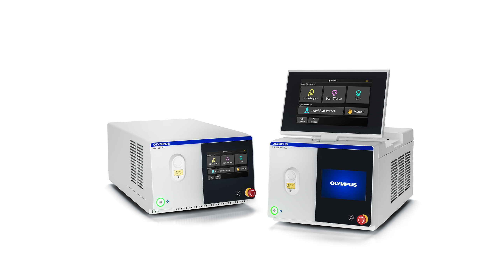

Welcome to my playful corner of Robotics and Mechanics!
Here's a snapshot of my journey, featuring bits and pieces from my past projects.
RNN Optimization
Optimizing the recurrent neural network architecture through integration with diffusion probabilistic model.
Room Exploration and Mapping Robot 10/2022 - 12/2022
Implement a robot that can explore an unknown environment and create a map. After the map is created, Robot should be able to localize and navigate itself on the map.
Robot Navigation and Mapping in Arena 03/2022- 05/2022
Implement two robots with different grippers that can follow the lines on the map and finish the task of "replacing the roots".

Smart Laser Lithotripsy System
Develop and incorporate machine learning models to create a fail-safe system for the medical device.
Implemented data logger processor program to filter and visualize data from thermocouples.
Multi-Modal Analysis of Teacher Negativity in Classroom Observation Videos
Proposed and implemented an automatic and semi-automatic negativity filter technique that can help teachers and learning science researchers find critical moments within classrooms, which is essential to improve teaching quality.
Implemented and modified SpeechBrain into a real-time speech activity and speaker recognition system based on PyTorch with user interface. Enabled a client-server data transfer pipeline to accelerate the speech processing speed.